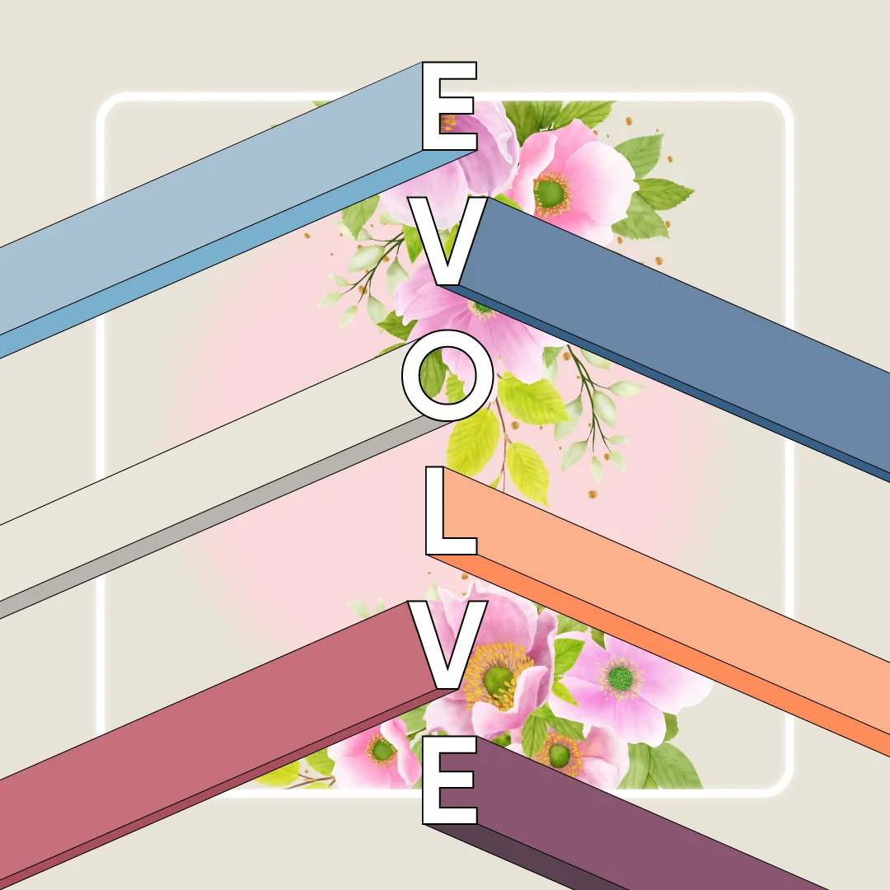
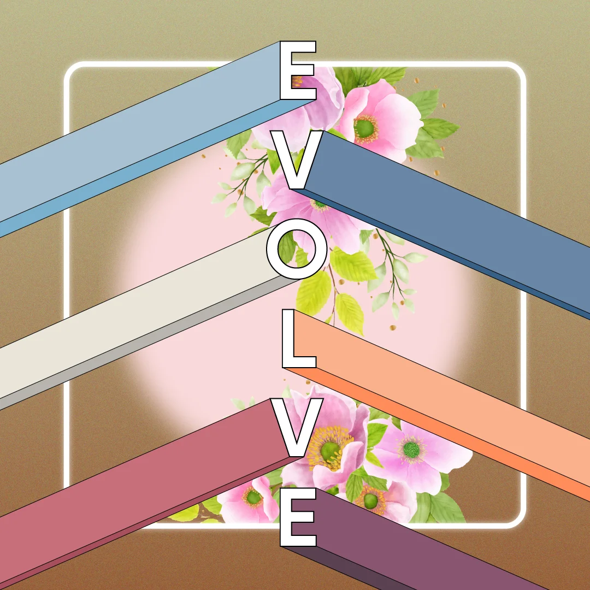
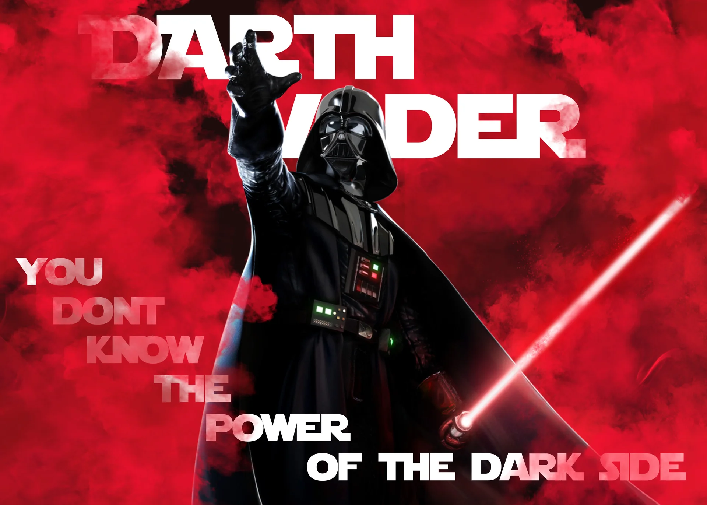
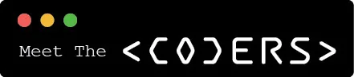
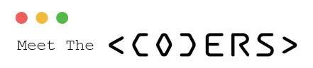

.webp)
.webp)


.webp)

.webp)
.webp)
.webp)
.webp)


.webp)
.webp)
.webp)
.webp)
.webp)
.webp)
.webp)
.webp)
.webp)
.webp)
.webp)
.webp)
.webp)


.webp)

.webp)
.webp)


✦ BRAND REDESIGN · RETRO WORLD
YOGABAR Pure Imagination
A full millet-muesli rebrand — checkers, heavy type, and an interactive packaging lab. The entire site switches theme when you step in.

INITIALIZING BATCAVE...
ALSO A DECENT
i might also be batman 🦇
name: "Sahil Ladha"
class: "Graphic Designer"
subclass: "Video Editor"
level: 26
alignment: "Chaotic Creative"
languages: 7 (almost)
secret_identity: ████████
█
A short briefing — traits, tongues, and tells.
Less hours, more output. Work smart, not hard — efficiency as a discipline.
Half ideas, half instinct. Visual problem-solving with attitude.
Sometimes it's a problem.
Translates ideas across languages, stakeholders, and time zones.
← swipe or use arrows →
Graphic Design Intern
Mar – Jun 2022
Started as a novice intern. Not knowing about any software or the basics of design. Ended the internship as a fast learner with dominating designs.
Jr. Graphic Designer
Jun 2022 – May 2023
Leveled up with a knack for marketing ideas. Became the one with new ideas for UI/UX, Posts & topics.
Graphic Designer
Jun 2023 – Present
Easy to communicate in different languages. Kept growing ever since...
Other than protect the streets of Gotham
Because Every Hero Needs A Symbol.
Visually pleasing content that converts.
Clarifying complex data through impact.
Bringing your hero's moves to life.
Your hero's toolkit for the real world.
Seriously. I'm seriously funny.
Receipts. Pixels. Proof.
 FEATURED
FEATURED
// 001 — CASE STUDY · KEY VISUAL
A campaign key visual designed to be the single image that carries the whole brand moment. Tight subject framing, a disciplined palette, and a composition that earns its place on a billboard, a feed post, and a hoarding without losing impact.
 FEATURED
FEATURED
// 002 — CASE STUDY · PACKAGING
Honestly, the hardest part was coming up with the brand name. Once Nutripaw clicked, everything fell into place. 'Nutri' pulls you towards health and nature — so green and earthy tones weren't even a decision, they were obvious. The two promo callouts had to live on the front. Non-negotiable. The challenge was making them feel like part of the design rather than an afterthought.
 FEATURED
FEATURED
// 004 — CASE STUDY · SOCIAL
An engagement-led social post built to earn the comment, not just the scroll. Thumb-stopping contrast, conversational copy, and a clear prompt to participate — designed to make the audience reply, save, and tag a friend.



Honestly, the hardest part of this entire project was coming up with the brand name. Once Nutripaw clicked, everything else fell into place. 'Nutri' naturally pulls you towards health and nature — so green and earthy tones weren't even a decision, they were obvious. The two promo callouts had to live on the front. That was non-negotiable from the brief. The challenge was making them feel like part of the design rather than an afterthought.
READ FULL BRIEFHere's the thing — I don't know anything about coding. Which might actually be why this worked. I came in thinking purely as a designer, not a developer. Then it hit me. A terminal window is basically a coder's home. So instead of designing a logo about coding, I designed something that felt like coding — the brackets, the monospace type, the traffic light dots.
READ FULL BRIEF

The brief was simple: take a brand everyone knows and make them stop scrolling. Fevicol's whole identity is built on the idea that things stick together. So the visual had to do the same — stick in your head. Three variants, same DNA, different punchlines.
READ FULL BRIEFNo client brief, just a personal challenge: can I make an ed-tech brand feel aspirational instead of transactional? The answer was stripping everything back to one face, one message, one emotion.
READ FULL BRIEFA project that demanded a balance between nature-inspired warmth and contemporary design sensibility. The logo needed to evoke flowing water without being literal, and the colour palette had to feel both earthy and premium.
READ FULL BRIEFThe hero key visual of the campaign — the single anchor frame that everything else reports to. Built to scale from a thumbnail to a hoarding without losing punch.
READ FULL BRIEFDesigned to earn the comment, not just the scroll. Thumb-stopping contrast, conversational copy, a clear prompt to participate.
READ FULL BRIEFTwo full interactive case studies. Not galleries — places.
A full millet-muesli rebrand — checkers, heavy type, and an interactive packaging lab. The entire site switches theme when you step in.
Walk a kirana aisle in first person — pick deliverables off the shelf, flip them over, and check out. Woh bharosa, ab aapke phone par.
Slide decks that earned the swipe — set in motion.
Because design with a sense of humor hits harder.
Edits, intros, and motion experiments — cuts that move.


A vintage rebrand for Yogabar Millet Muesli — checkers, heavy typography, and a pack built to dominate the shelf.
See the work →Come with me to a land of mighty millets.
I buy two packs of this every month. I know where it sits on the shelf — and it still manages to blend in. Here's what was broken.
Serif, script, hand-drawn, and sans-serif all on one pack with zero system. "Nuts & Seeds Crunch" fights "Millet Muesli" for visual dominance. No hierarchy — just variety for variety's sake.
Typography"Made with the goodness of mighty millets" is the brand's strongest claim — and it's stuck in a thin tear-away strip. Once the pack is opened, that message is gone forever.
MessagingSugar badges, certifications, callouts — all fight simultaneously. Dark brown on orange is an accessibility problem. Nothing breathes.
HierarchySame Yogabar. Just louder about it.
Every visual decision made intentional. Palette, type, shapes — all working together to scream from the shelf.
Click a swatch to copy hex · double-click to set canvas in Lab
The checker pattern is the primary visual signature — loud, geometric, shelf-dominant.
Two fonts. One rule. Display for drama, Inter for clarity. No exceptions.
Mighty Millets, No Refined Sugar, Whole Grains — strongest assets front and center.
Every pairing passes WCAG AA. Legible from across the aisle.
A checkers-driven identity built to dominate the supermarket shelf instantly.
Structured navy checkerboards contrasted against vibrant coral elements. Solves readability while standing out from afar.
Warm golden checkers deliver a delicious, high-contrast look. Highlights ragi, jowar, and millet ingredients cleanly.
Loud, checkered tote bags and premium print mockups bring the energetic retro pattern to life.

Premium canvas shopper bag leveraging the loud navy-coral checker pattern and central 'Pure Imagination' identity.

High-contrast tomato-red canvas with solid vintage typography and yellow accents — collectible brand merch.


Translating the checkered visual energy into digital. Unmistakable, unified, on-brand.

Navy-coral Instagram post concept. Consistent checkerboard grid, heavy retro typography, assertive layouts.
Sahil Ladha · May 2026The rebranded social system leverages the navy-coral checkerboard pattern paired with retro bold typography.
Strict geometric layouts and high-contrast color hierarchies avoid visual clutter while boosting immediate brand recall.
ApprovedPlay with the rebrand rules in real-time. Change backdrops, swap packaging, toggle claims.
Mighty Millets
No Refined Sugar
100% Whole Grains
The hardest part wasn't the design — it was figuring out what to throw away.
The original tried to say everything at once and ended up saying nothing. The rebrand works because it does less — one pattern, one type system, one hero claim per zone.
Couldn't get elegant with bold Yogabar colors — so I leaned into loud. The checkerboard only happened because elegant wasn't working. The limitation became the whole identity.
Supermarket shelf design is different from screen design. "Does it stop someone at 5 feet?" changes every decision.
100+ tries went nowhere. Stopped being clever, asked "how loud can I make this?" — and had it in 4 attempts.
I had fun doing it. I hope it'll be worth the Yogabar ads now.
— Sahil Ladha · May 2026Description


.webp)


.webp)
.webp)
.webp)
.webp)
.webp)
.webp)
.webp)